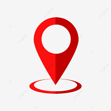

Petunjuk
1. Gunakan tombol zoom in  , zoom out
, zoom out  , dan reset bearing to north
, dan reset bearing to north  untuk mengubah posisi peta.
untuk mengubah posisi peta.
2. Titik biru bertuliskan huruf "A" merupakan titik lokasi Anda.
3. Klik tombol  untuk menampilkan lokasi Pondok Pesantren Al-Munawir.
4. Klik salah satu bangunan sebagai tujuan destinasi.
5. Rute ditampilkan sebagai garis biru pada peta.
Asrama Putra
Asrama Putri
Bangunan Umum